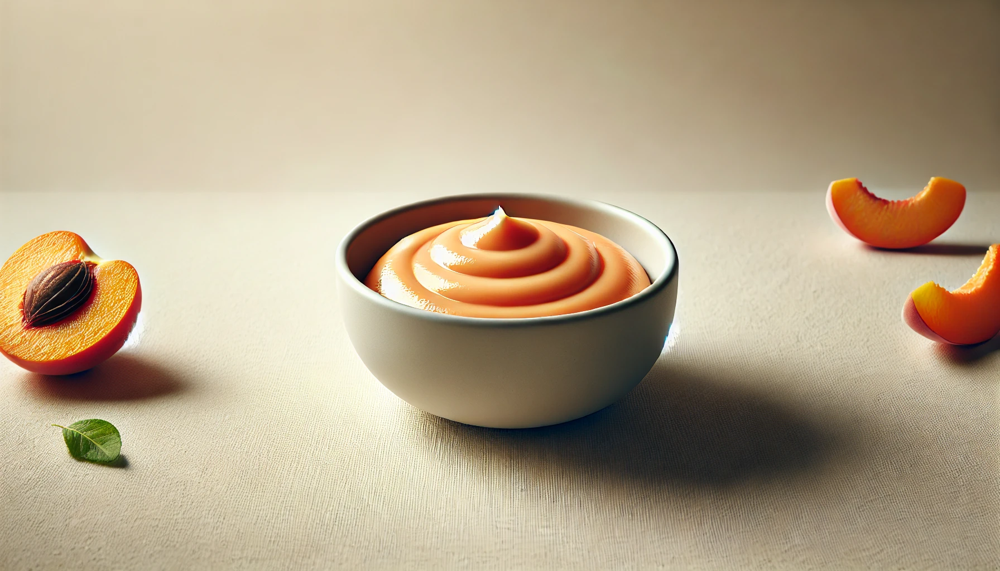
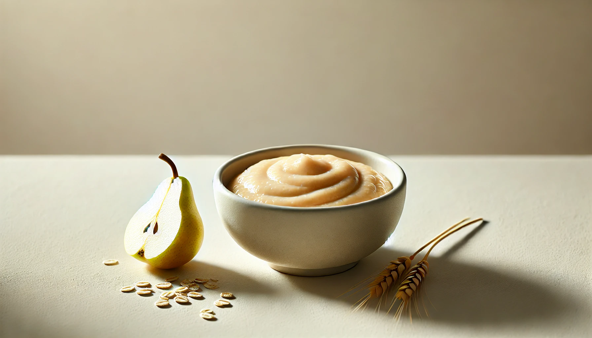

Breakfast Plan - 6 Months Old
Week 4
Introducing solids is a special milestone! This simple 7-day breakfast plan is designed for 6-month-old babies starting their first foods. Each recipe is made with wholesome, easy-to-digest ingredients. Perfect for beginner eaters!
Tips Before You Start:
⁕ Offer only 1 new food every 3 days to watch for allergies.
⁕ Make sure the texture is smooth and suitable for early eaters.
⁕ Always consult your pediatrician before introducing new foods.
How to Use This Plan:
Use fresh ingredients.
Offer 2–3 tablespoons per meal depending on baby’s appetite.
Store extra portions in sterilized containers.
Adjust consistency with breastmilk, formula, or boiled water.
This plan focuses on soft, well-balanced meals with combinations of fruits, vegetables, and grains to help build your baby’s palate while keeping digestion gentle and healthy.

Breakfast Recipe
Banana + Suji (Semolina) Porridge
Description
A naturally sweet and creamy combination rich in energy.
Ingredients
1 tbsp suji
½ ripe banana
¾ cup water or milk
Instructions
Dry roast suji, then cook in water or milk. Once thickened, mash or blend in banana. Cool before serving.

Breakfast Recipe
Peach Purée
Description
Mild, sweet, and easy to digest - great for hydration.
Ingredients
1 ripe peach (peeled and sliced)
Instructions
Steam or boil until soft. Blend into a smooth purée. Serve lukewarm.

Breakfast Recipe
Oats + Pear Combo
Description
A smooth, wholesome breakfast with fiber and gentle sweetness.
Ingredients
1 tbsp oats
¼ cup chopped pear
¾ cup water
Instructions
Cook oats and pear together until soft. Blend into a smooth porridge.
Breakfast Recipe
Carrot + Potato Purée
Description
A silky, vitamin-rich blend that’s filling and soft.
Ingredients
1 tbsp chopped carrot
1 small potato
Instructions
Steam both until tender. Blend together with a bit of water or milk.
Breakfast Recipe
Chikoo (Sapota) Purée
Description
Naturally sweet fruit purée rich in antioxidants and fiber.
Ingredients
1 ripe chikoo (peeled and deseeded)
Instructions
Mash or blend until smooth. Serve immediately to avoid browning.
Breakfast Recipe
Moong Dal Khichdi (Blended)
Description
A mild protein-rich porridge of dal and rice, blended to smoothness.
Ingredients
1 tbsp rice
1 tbsp yellow moong dal
1 cup water
Instructions
Cook rice and dal together until very soft. Blend into a porridge-like consistency.
Optional:
Add a pinch of cumin powder (if previously introduced).
Breakfast Recipe
Apple + Ragi Combo
Description
Iron-rich and fruity - a power breakfast for tiny tummies.
Ingredients
1 tbsp ragi flour
¼ cup chopped apple
¾ cup water
Instructions
Cook apple and ragi together until soft and thick. Blend until smooth and serve warm.
Storage Tips ☛ Here